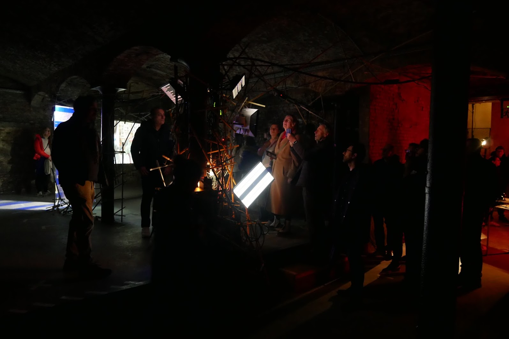

A.I.
Artistic Intelligence
Kasper Jordaens
FTI slotevent 24-03-24


artist
research engineer
KASPAROV
vs
deep blue

Alternative Facts
2023
Bots are great
if you collaborate
200M moves/sec
vs
2 moves/sec
Chess
10^120
10^44
vs
Music
10^12
10^12 * 10^8
10^12 * 10^8 * X * ...
10^xyz / ???
Flemisch Raving Masters - 2023
The secret to creativity is knowing how to hide your sources
Albert Einstein
If you steal from one author, it’s plagiarism,
if you steal from many, it’s research.
Wilson Mizner
If I have seen further than others,
it is by standing upon the shoulders of giants.
Isaac Newton
Good artists copy, great artists steal.
Pablo Picasso
prompt engineering
Embrace Imperfections

Cluster Analysis

Convert The Rhythm To A Melody
fill Every Beat With Something

Get Your Neck Massaged
Imagine The Music As A Set Of Disconnected Events

the Tape Is Now The Music

twist the spine
Oblique Diffusions - 2022
Analyse

Psychoananalyst: What do you see?
Computer: ...
Deep Dream Analysis - 2017
Data Driven Dreams





ZIEL


easy peasy
BOTBOP
Integers & Strings
Combine